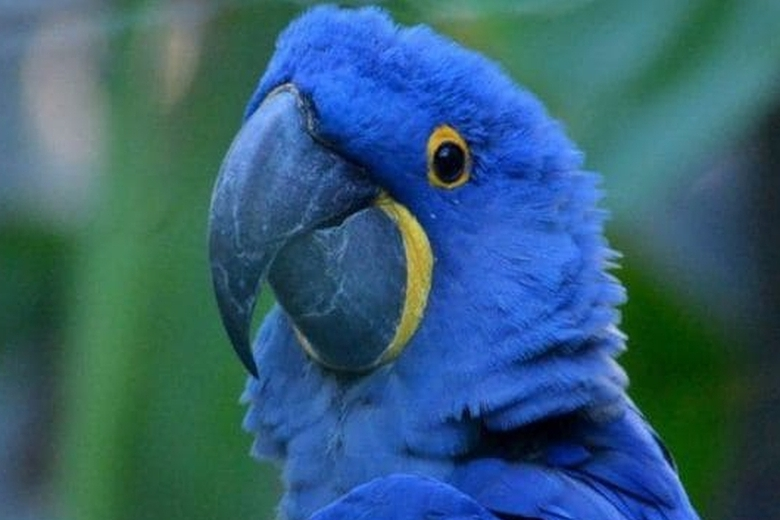

Guacamayo azul que inspiró la película "Río" es declarado extinto
Pese a que la cinta se realizó para concientizar y proteger esta especie del daño que hacemos al ecosistema, la deforestación ha hecho finalmente de las suyas. Un amargo final que exhibe las consecuencias de la avaricia humana.

Un estudio sobre especies en extinción, realizado por la organización Birdlife Internacional, determinó que la especie de guacamayo azul se habría extinguido de la naturaleza.
Según la organización, algunas aves de esa especie sobreviven en estado de cautiverio. El guacamayo azul, especie que solo vive en Brasil, sería uno de los ocho pájaros que se habrían extinguido.
aves causan incendios para cazar mas facilmente
Guacamayo azul que inspiró la película "Río" es declarado extinto
La gorila que pudo hablar, su nombre fue Koko
Puerto Rico: Loros criados en cautiverio desarrollaron nuevos dialectos
Los vikingos descubrieron América 500 años antes que Colón